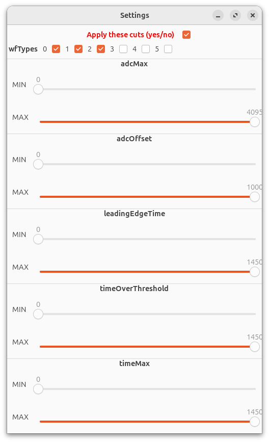
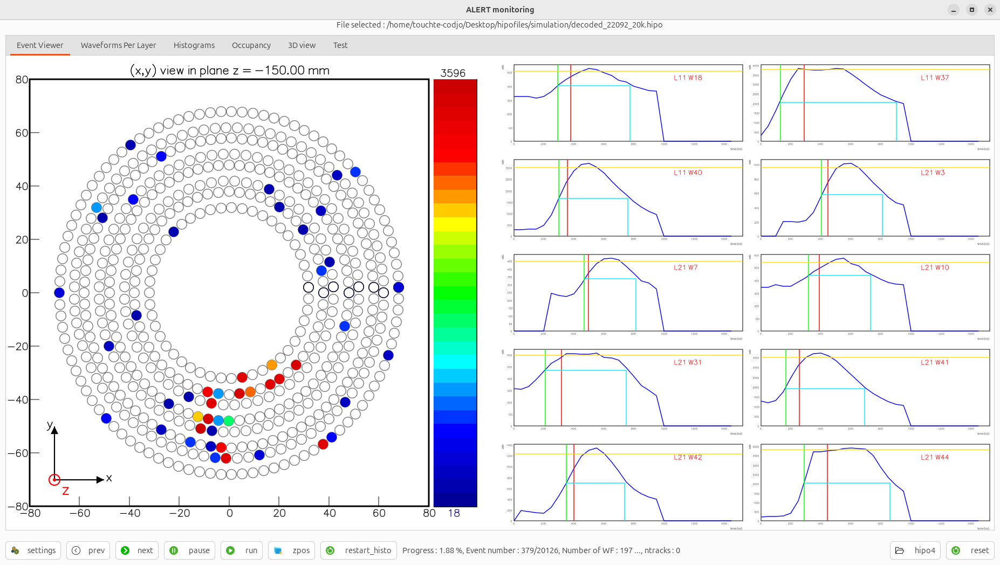
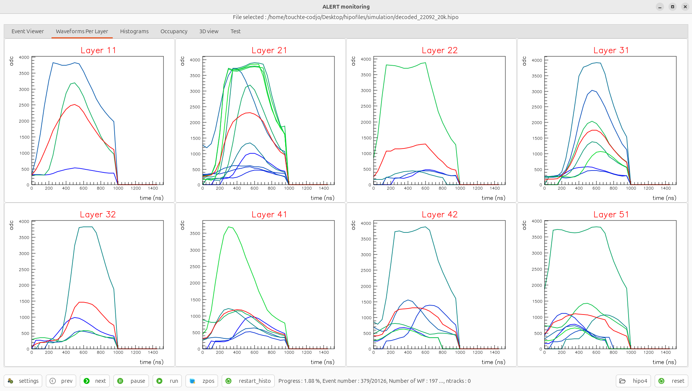
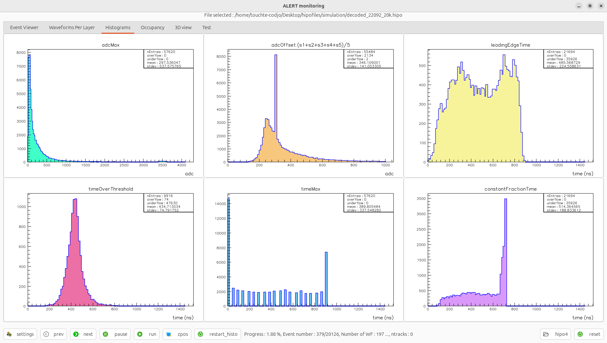
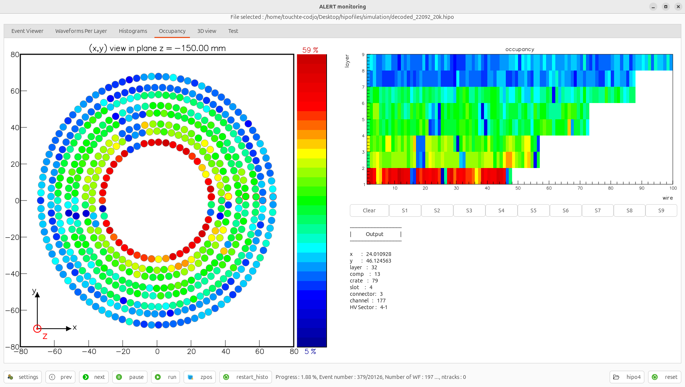

Manage wfType cuts and raw hit cuts
Lognumber 39.
Submitted on Sat, 16 Aug 2025 - 03:00:16 CEST
Marker: amon
Send to:
Added new features :
1) If "Apply these cuts" is OFF, do no cut (show all hits)
2) Else, if set to ON, take note of all type authorised (e.g wfTypes 0 and 1 are ON); then require the actual wfType is wether 0 or 1
THEN
3) If one of adcMax, adcOffset, leadingEdegeTime, timeOverThreshold, timeMax is negative (non standard values like -9999, -99, ...) ignore this hit
4) Else, if require than apart of being a good wfType, the hit should also satistfy the raw hit cuts.
5) I have made some cleaning and add a "Restart histogram button" --> this is done to do not use the reset button and have to select again the same file.
---
Meaning of the wfType :
0 is good,
1 is saturating,
2 has too short of a baseline,
3 is late and only has a rising edge,
4 is a trailing edge from a previous wf,
5 has low ADC ("flat"),
6 is invalid
Attachments (5)
1.

2.

3.

4.

5.
